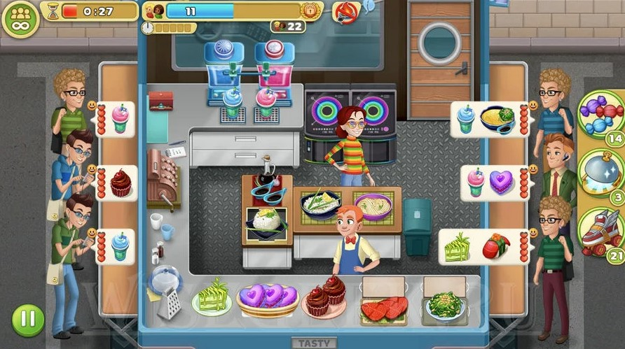
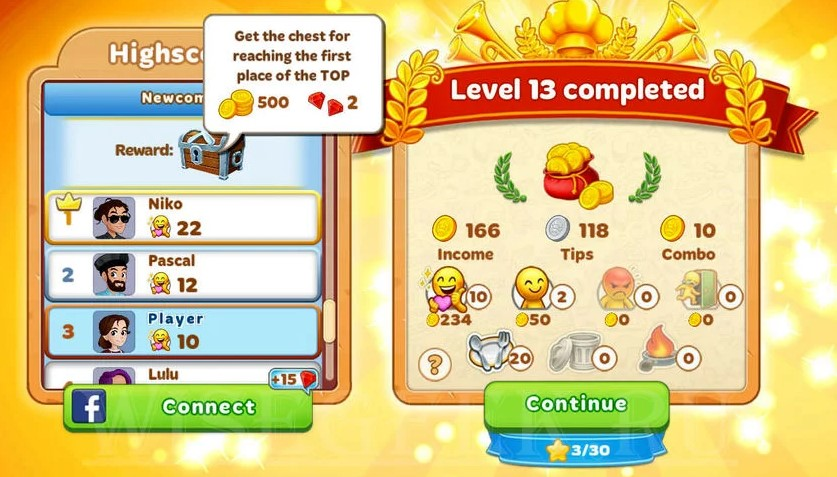
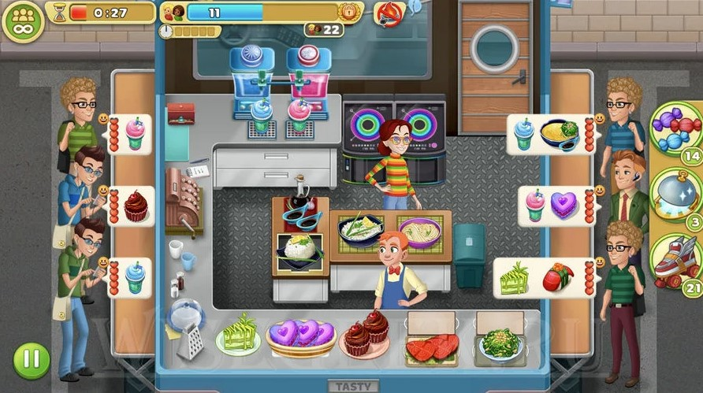
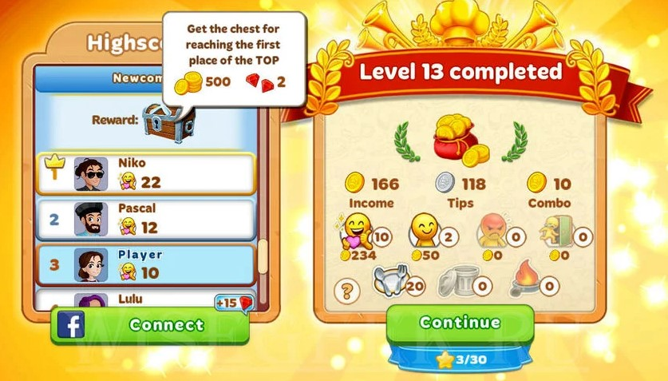

Cualquiera puede abrir un bar, una cafetería o un restaurante. Al fin y al cabo, sólo necesitas dinero y un local, pero ¿serías capaz de gestionarlo? Juega a Cooking Diary Juego de Cocina en PC y únete a la multipremiada experiencia culinaria que encandila a cada vez más jugadores. En este simulador de cocina desarrollado por MYTONA llegarás a la entusiasta ciudad de Tasty Hills, una localidad donde todos hacen sus pinitos en la cocina. Hay demasiada competencia y tu abuelo necesita que le ayudes a gestionar sus numerosos restaurantes y así recobrar la reputación familiar ¿serás capaz? Adéntrate en la historia de los ciudadanos de Tasty Hills y conquístalos con tu buena mano con los fogones ¡pero cuidado! Hay gente malvada que quiere verte fracasar ¡no les dejes! Abre docenas de restaurantes por todos los distritos de la ciudad, decóralos a tu gusto y deleita el paladar de tus comensales elaborando cientos de recetas disponibles. Descubrirás una experiencia fascinante que mezcla alta cocina, amistad y mucha interacción. Juega con tus amigos o con otros jugadores de todo el mundo y comprarte tus experiencias a través del chat. Descarga Cooking Diary Juego de Cocina en PC con BlueStacks y empieza a cocinar.
Objetivos de nivel.
 



El juego tiene diferentes objetivos que debes completar para completar el nivel: El objetivo es recolectar monedas. Para cumplir con este objetivo, debes ganar una cierta cantidad de monedas. Cuanto mejor sirva a sus clientes, más monedas obtendrá. El objetivo es servir a los clientes. Para cumplir con este objetivo, debe atender a un cierto número de clientes. No importa de qué humor salgan de tu restaurante. Al final del nivel, recibirás las monedas ganadas. El objetivo es coleccionar corazones. Para cumplir con este objetivo, debes recolectar los corazones de los clientes. Los corazones son la paciencia del cliente. Cuanto mejor sea el estado de ánimo de sus clientes, más corazones recibirá. Al final del nivel, recibirás las monedas ganadas.